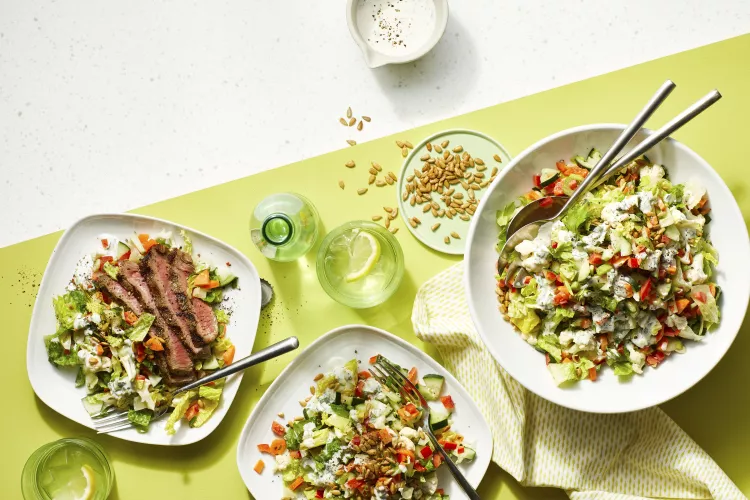

Chopped Salad with Buttermilk Dressing

Description
Creamy dressing and fresh garden veggies add up to more than the sum of their parts in this crunchy, craveable salad.
This Allrecipes Magazine recipe is based on Whole Plant Chopped Salad.
Cover dressing and refrigerate for up to 1 week.
Ingredients
- 2 romaine lettuce hearts, chopped into 1-inch pieces
- 1 large cucumber, chopped
- red bell pepper, diced
- 1 cup chopped cauliflower florets
- 1 carrot, chopped
- 1 celery stalk with leaves, diced
- 3 green onions, sliced
- ¼ cup sunflower seeds
- 1 ½ tablespoons chopped fresh parsley
- 1 pinch salt and ground black pepper to taste
Steps
- Whisk buttermilk, sour cream, mayonnaise, lemon juice, celery, parsley, dill, Dijon mustard, onion powder, salt, and pepper together in a small bowl until well blended.
- Toss romaine, cucumber, bell pepper, cauliflower, carrot, celery, green onions, sunflower seeds, and parsley together in a large bowl. Serve with dressing. Season with additional salt and pepper.